Every exit approved. Every return on record.
Outpass replaces the paper register at your hostel gate. Students request an outpass, parents and wardens approve it on their phones, and the guard scans a live QR code that can't be screenshotted and reused.
For colleges, hostels and schools. On iPhone, Android and the web.Three flows run the whole gate
These are real screens from the app, captured in order as each flow ran end to end.
From request to return. If no parent is linked, or the student is 18+ and the college uses notify-only mode, the request goes straight to the warden.
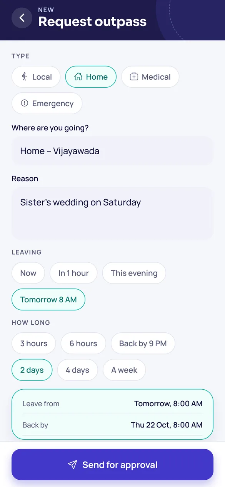
Student requests
Type, destination, reason. Time presets instead of date pickers.
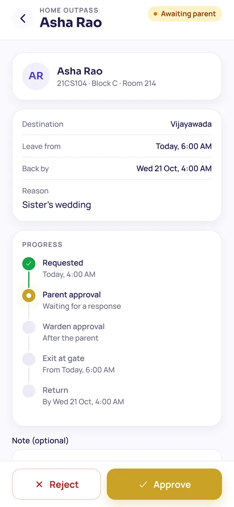
Parent approves
The linked parent sees the request and decides in one tap.
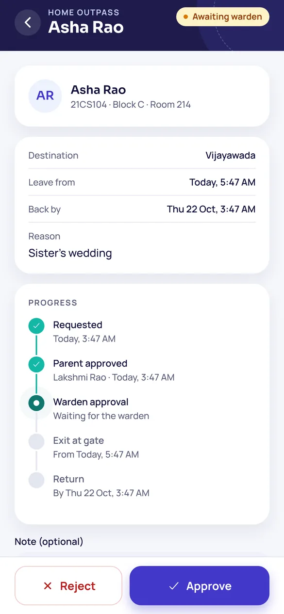
Warden approves
Final say. A warden can step in for an unreachable parent, with a logged reason.
Live gate pass
A gold pass with a QR code that changes every few seconds.
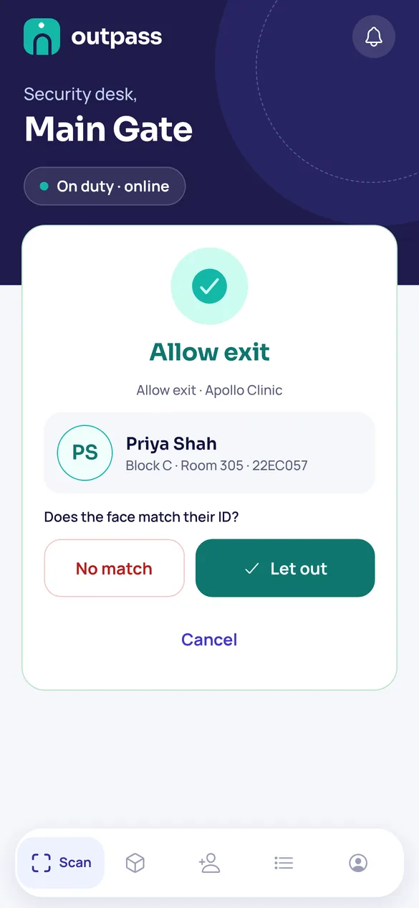
Guard checks the face
The scan only verifies. The guard confirms the face matches the ID.
Exit recorded
Saved on the device first if the network is down, then synced.
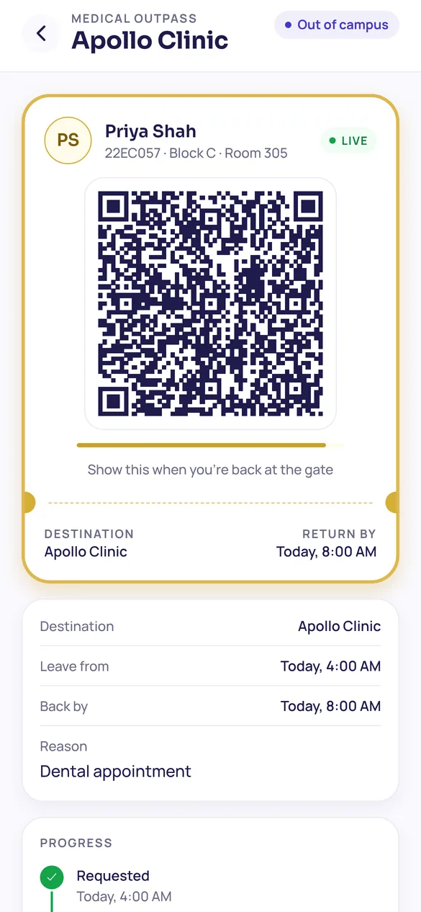
Back by the deadline
The same pass is scanned on return. Late returns are flagged.
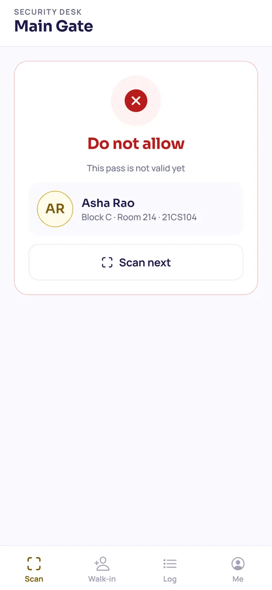
Too early? Turned back
Passes only open 15 minutes before the leave time.
Faculty, wardens and students can invite visitors ahead of time. Anyone who turns up without an invite is registered at the gate and approved by the person they came to see.
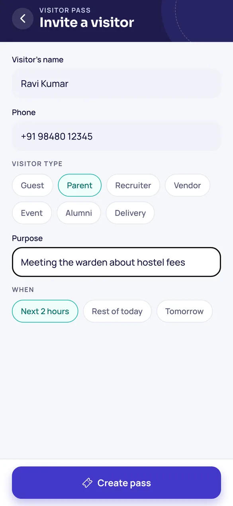
Host invites
Name, phone, type of visitor, purpose and a time window.
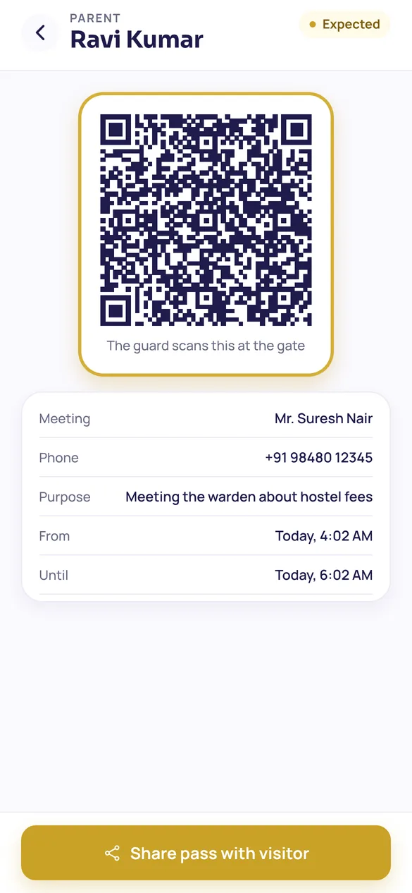
Pass shared
The host sends the pass to the visitor from their phone.
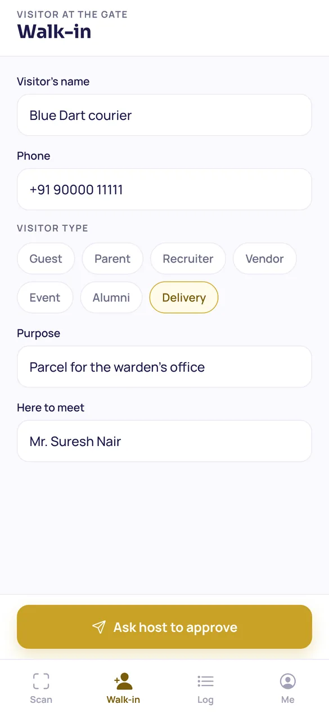
Walk-ins at the gate
The guard registers them and picks who they're here to meet.
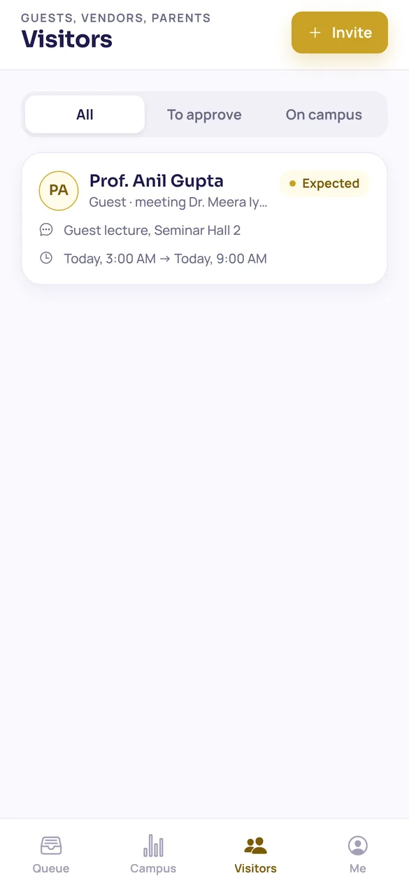
Host lets them in
Walk-ins wait in the host's Visitors list until approved.
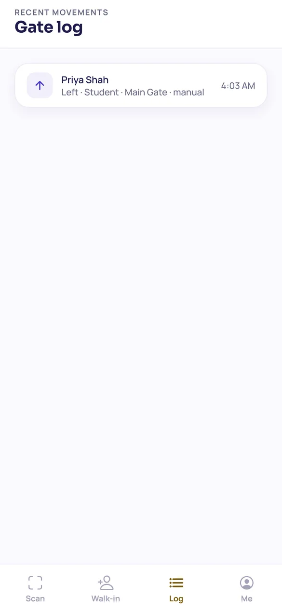
Every movement logged
Entries, exits and turn-backs, with time and method.
Wardens and admins see the hostel as it is right now, without counting register pages.
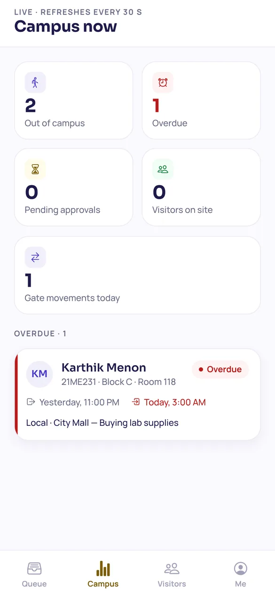
Campus now
Who's out, who's overdue, what's pending. Refreshes every 30 s.
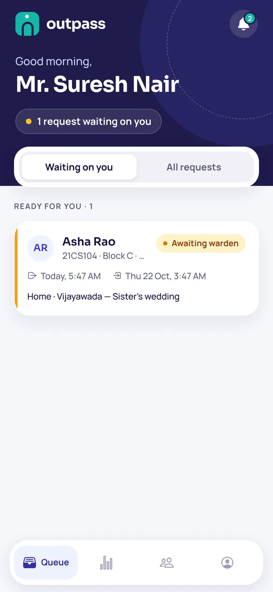
Approval queue
Split into "ready for you" and "still with parent".
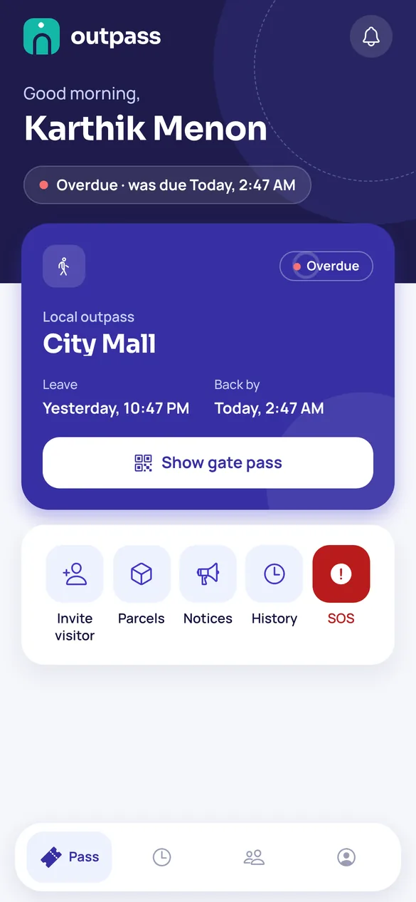
Overdue, in red
The student sees it too, the moment the return time passes.
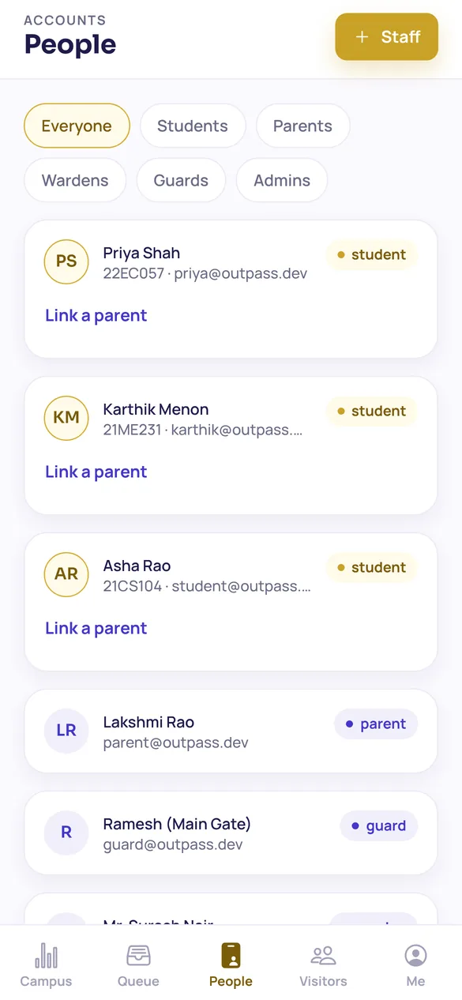
People and access
Admins add guards and wardens and link parents to students.
One app, five roles
Everyone signs in to the same app and lands on the screens for their job.
Student
Pass · History · Visitors · Me- Request an outpass
- Follow each approval
- Show the live gate pass
- Invite visitors
Parent
Approvals · History · Me- Approve or reject requests
- See past trips
- Know when a child is out
Warden
Queue · Campus · Visitors · Me- Final approval
- Override with a reason
- Track overdue students
- Host visitors
Guard
Scan · Walk-in · Log · Me- Scan QR or look up a roll number
- Check the face, let in or out
- Register walk-ins
- Keep working offline
Admin
Campus · Queue · People · Visitors- Create staff accounts
- Link parents to students
- Watch the whole campus
Made for phones, open in any browser
Outpass is one React Native app. The same code ships to the App Store and Google Play and runs on the web, so a warden at a desk sees exactly what a guard sees at the gate.
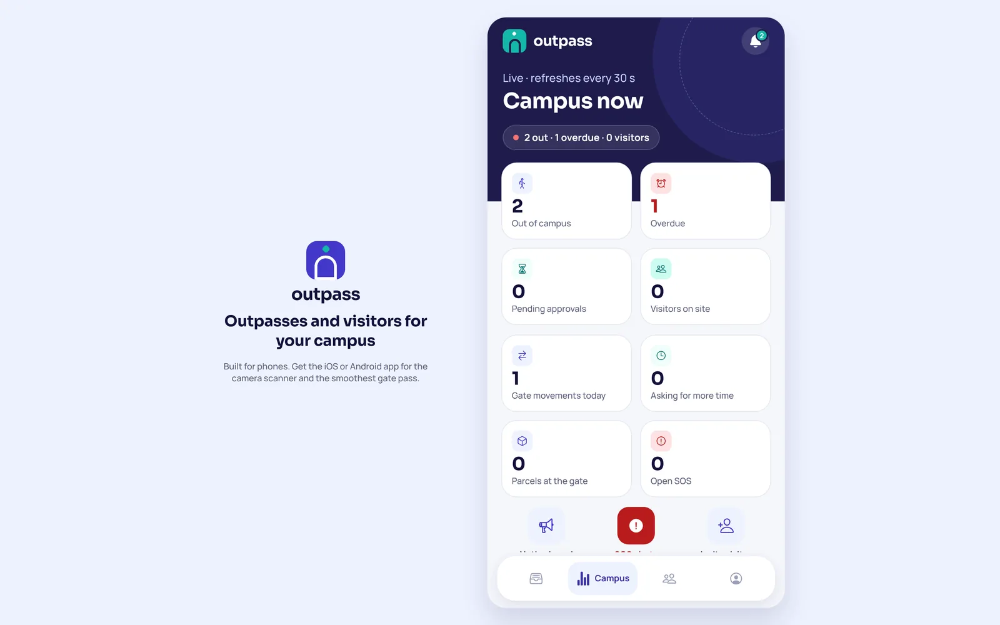
Every screen, by role
Captured from the working app with demo data.
The details a paper register can't do
QR codes that expire
Each code is signed and lasts 45 seconds. A forwarded screenshot is useless by the time it reaches the gate.
Overrides are logged
When a warden decides before the parent, the app records who, when and why.
Works when Wi-Fi drops
Exits and entries are queued on the guard's phone and sent once the connection is back, with no duplicates.
Overdue at a glance
Anyone out past their return time shows up in red on the warden's dashboard.
No phone, no problem
Guards can look up a student's active pass by roll number and check their college ID.
Fits your rules
Choose whether students over 18 still need a parent's approval.
Bring Outpass to your hostel gate
Start with one hostel and one gate. Students and parents sign up themselves; your office adds the wardens and guards.